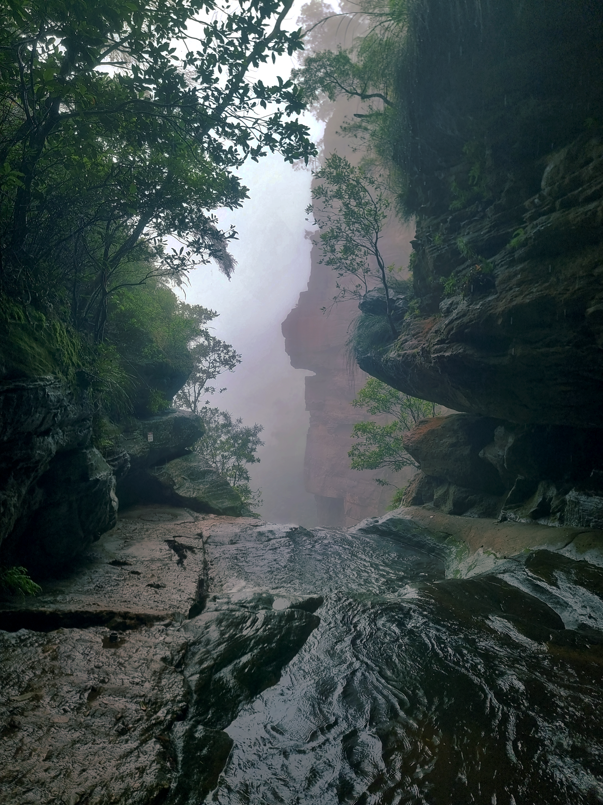

Original och redigerade bilder
I varje bildpar visas den redigerade bilden först och originalet sedan.
Bild 1

Jag använde Nyans/mättnad och en lagermask för att färga om de lila blommorna i förgrunden till blått. Masken lät mig styra var färgbytet syntes och putsa kanterna runt kronbladen. Jag justerade också ljus, kontrast och färgbalans för att få en dovare grönska som passar resten av bildserien. En svag vinjett längs kanterna leder blicken mot blommorna.
Bild 2


Jag tog bort personen vid vattenfallet och retuscherade området så att det smälte in i omgivningen. Jag tonade också ned artefakter i himlen och dämpade bruset. Med Kurvor och Ljusstyrka/kontrast framhävde jag klippornas struktur. Jag justerade färgbalansen för att ge skuggorna en sval, blågrön ton och behålla den dimmiga känslan.
Bild 3


Med Kurvor ljusade jag upp mörka partier för att framhäva detaljer i bergen och växtligheten. Jag använde också Ljusstyrka/kontrast tillsammans med lagermasker för att justera utvalda delar av bilden.
Med Färgbalans, Fotofilter och Nyans/mättnad gav jag bilden en svalare och mer dämpad färgskala som passar resten av serien. Målet var att bevara dramatiken i molnen och djupet i landskapet samtidigt som detaljerna blev tydligare.